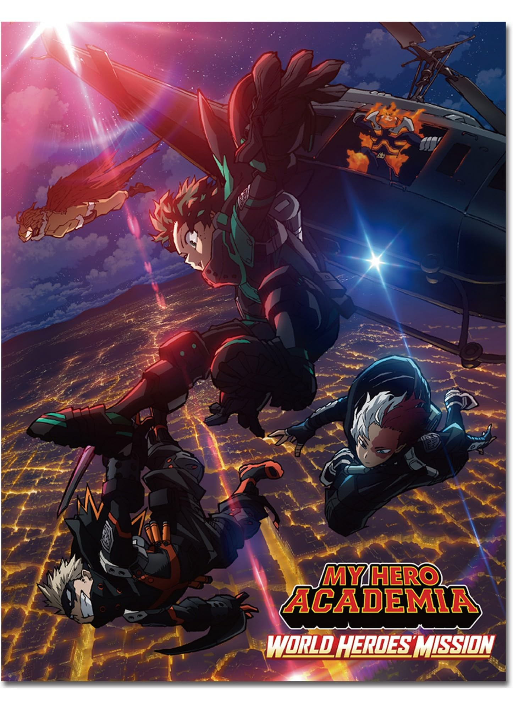

My Hero Academia Movies
Summary
1. My Hero Acadmeia: Two Heroes (2018)
Set between Seasons 2 and 3, this film follows Izuku Midoriya (Deku) and All Might as they travel to I-Island, a mobile research facility. When a group of villains attacks, it's up to Deku and his classmates to save the day while uncovering a sinister plot targeting All Might.
2. My Hero Academia: Heroes Rising (2019)

Taking place after Season 4, Class 1-A is sent to Nabu Island for a hero training program. Their mission turns into a life-threatening battle when Nine, a powerful villain with multiple Quirks, arrives to wreak havoc.
3. My Hero Acadmeia: World Heroes' Mission (2019)
A terrorist organization, Humarise, threatens humanity by targeting those with Quirks. Deku, Bakugo, and Todoroki join a global effort to stop them. With Deku framed for a crime, he must clear his name and prevent mass destruction.